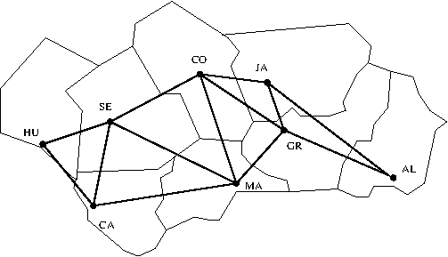
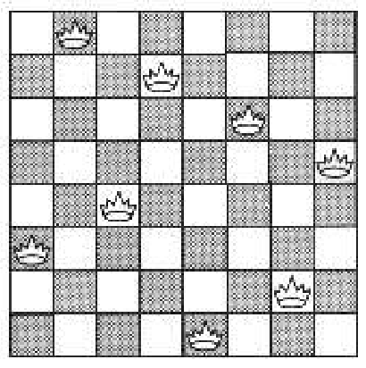

Tema 7: Aplicaciones: Grafos, reinas y mapas
1. Grafos
1.1. Representación de los grafos
- Un grafo (no orientado y sin nodos aislados) se representa mediante la
definición del predicado
grafo(G,A)que se verifica siGes el nombre del grafo yAes la lista de arcos deG(cada uno representado mediante un términoX-Y). La representación del siguiente grafo
b / | \ / | \ a | c | / | / |/ des
grafo(ejemplo1,[a-b,b-c,b-d,c-d]).
El grafo de las conexiones entre ciudades andaluzas vecinas es
 y su representación esgrafo(andalucía, [almería-granada, almería-jaén, cádiz-huelva, cádiz-málaga, cádiz-sevilla, córdoba-granada, córdoba-jaén, córdoba-málaga, córdoba-sevilla, granada-jaén, granada-málaga, huelva-sevilla, málaga-sevilla]).
arcos(G,L)se verifica siLes la lista de arcos del grafoG. Por ejemplo,?- arcos(ejemplo1,L). L = [a-b, b-c, b-d, c-d]. ?- arcos(andalucía,L). L = [almería-granada, almería-jaén, cádiz-huelva, cádiz-málaga, cádiz-sevilla, córdoba-granada, córdoba-jaén, córdoba-málaga, ... - ...|...].
Su definición es
arcos(G,A) :- grafo(G,A).
adyacente(G,X,Y)se verifica siXeYson adyacentes en el grafoG. Por ejemplo,?- adyacente(ejemplo1,d,X). X = b ; X = c. ?- adyacente(andalucía,almería,X). X = granada ; X = jaén ; false.
Su definición es
adyacente(X,Y) :- arcos(L), (member(X-Y,L) ; member(Y-X,L)).
nodos(G,L)se verifica siLes la lista de nodos de grafo G. Por ejemplo,?- nodos(ejemplo1,L). L = [a, b, c, d]. ?- nodos(andalucía,L). L = [almería, cádiz, córdoba, granada, huelva, jaén, málaga, sevilla].
Su definición es
nodos(G,L) :- setof(X,Y^adyacente(G,X,Y),L).
nodo(G,N)se verifica siNes un nodo deG. Por ejemplo,?- nodo(ejemplo1,N). N = a ; N = b ; N = c ; N = d. ?- nodo(andalucía,N). N = almería ; N = cádiz ; N = córdoba ; N = granada ; N = huelva ; N = jaén ; N = málaga ; N = sevilla.
Su definición es
nodo(G,N) :- nodos(G,L), member(N,L).
- Nota: El código de esta sección se encuentra en representacion_de_grafos.pl.
1.2. Caminos en grafos
camino(G,A,Z,C)se verifica siCes un camino en el grafoGdesde el nodoAalZ. Por ejemplo,?- camino(ejemplo1,a,d,C). C = [a, b, d] ; C = [a, b, c, d] ; false. ?- camino(andalucía,sevilla,granada,C). C = [sevilla, huelva, cádiz, málaga, córdoba, jaén, almería, granada] ; C = [sevilla, cádiz, málaga, córdoba, jaén, almería, granada] ?- findall(C,camino(andalucía,sevilla,granada,C),_L), length(_L,N). N = 16.
Su definición es
camino(G,A,Z,C) :- camino_aux(G,A,[Z],C). % camino_aux(+G,+A,+CP,-C) se verifica si C es una camino en G compuesto de un % camino desde A hasta el primer elemento del camino parcial CP (con nodos % distintos a los de CP) junto CP. camino_aux(_,A,[A|C1],[A|C1]). camino_aux(G,A,[Y|C1],C) :- adyacente(G,X,Y), not(member(X,[Y|C1])), camino_aux(G,A,[X,Y|C1],C).
1.3. Caminos hamiltonianos
hamiltoniano(G,H)se verifica siHes un camino hamiltoniano en el grafoG(es decir, es un camino enGque pasa por todos sus nodos). Por ejemplo,?- hamiltoniano(ejemplo1,H). H = [a, b, c, d] ; H = [d, c, b, a] ; H = [c, d, b, a] ; H = [a, b, d, c] ; false. ?- hamiltoniano(andalucía,H). H = [sevilla, huelva, cádiz, málaga, córdoba, jaén, almería, granada] ; H = [huelva, sevilla, cádiz, málaga, córdoba, jaén, almería, granada] ?- hamiltoniano(andalucía,_H), length(_H,N). N = 8
Su definición es
% 1ª definición hamiltoniano(G,H) :- camino(G,_,_,H), cubre(G,H). % cubre(+G,+H) se verifica si el camino H cubre el grafo G (es decir, todos los % nodos de G pertenecen a H). cubre(G,H) :- igual_medida(G,H). % igual_medida(+G,+H) se verifica si el número de nodos del camino H es igual al % número de nodos del grafo G. igual_medida(G,H) :- length(H,MH), nodos(G,N), length(N,MH).
2ª definición de
hammitonianohamiltoniano_2(C) :- nodos(L), length(L,N), length(C,N), camino(_,_,C).
Comparación de eficiencia
?- time(findall(_C,hamiltoniano(andalucía,_C),_L)). % 119,184 inferences, 0.019 CPU in 0.019 seconds (100% CPU, 6237168 Lips) true. ?- time(findall(_C,hamiltoniano_2(andalucía,_C),_L)). % 47,111 inferences, 0.009 CPU in 0.009 seconds (100% CPU, 5344800 Lips) true.
- Nota: El código con las definiciones de
caminoyhamiltonianose encuentra en camino.pl.
1.4. Generacion de grafos completos
completo(+N,-G)se verifica siGes el grafo completo de ordenN. Por ejemplo,?- completo(3,G). G = [1-2, 1-3, 2-3]. ?- completo(4,G). G = [1-2, 1-3, 1-4, 2-3, 2-4, 3-4].
Su definición es
completo(N,G) :- findall(X-Y,arco_completo(N,X,Y),G). arco_completo(N,X,Y) :- N1 is N-1, between(1,N1,X), X1 is X+1, between(X1,N,Y).
1.5. Generación de grafos aleatorios
aleatorio(+P,+N,-G)se verifica siGes un subgrafo del grafo completo de ordenNdonde cada arco se ha elegido con la probabilidadP(0 <=P<= 1). Por ejemplo,?- aleatorio(0,4,G). G = []. ?- aleatorio(1,4,G). G = [1-2, 1-3, 1-4, 2-3, 2-4, 3-4]. ?- aleatorio(0.1,4,G). G = [2-3]. ?- aleatorio(0.1,4,G). G = [1-3, 1-4]. ?- aleatorio(0.8,4,G). G = [1-2, 1-3, 1-4, 2-3, 2-4]. ?- aleatorio(0.8,4,G). G = [1-3, 1-4, 2-3, 2-4].
Su definición es
aleatorio(P,N,G) :- findall(X-Y,(arco_completo(N,X,Y),probabilidad(Z),Z=<P),G). % probabilidad(X) se verifica si X es un número probabilidad en el intervalo % [0,1]. Por ejemplo, % ?- probabilidad(X). % X = 0.08. % % ?- probabilidad(X). % X = 0.023. probabilidad(X) :- Y is random(1000), X is Y/1000.
2. El problema de las reinas
2.1. Enunciado del problema de las reinas
- El problema de las N reinas consiste en colocar N reinas en un tablero rectangular de dimensiones N por N de forma que no se encuentren más de una en la misma línea: horizontal, vertical o diagonal. 
2.2. 1ª solución del problema de las N reinas.
reinas_1(+N,-S)se verifica siSes una solución del problema de lasNreinas. Por ejemplo,?- reinas_1(4,S). S = [1-3, 2-1, 3-4, 4-2] ; S = [1-2, 2-4, 3-1, 4-3] ; false. ?- reinas_1(8,S). S = [1-4, 2-2, 3-7, 4-3, 5-6, 6-8, 7-5, 8-1] ?- findall(S,reinas_1(8,S),_L), length(_L,N). N = 92.
Su definición es
reinas_1(N,S) :- tablero(N,S), solución(N,S). % tablero(N,L) se verifica si L es una lista de posiciones que % representan las coordenadas de N reinas en el tablero. Por ejemplo, % ?- tablero(4,L). % L = [1-_8750, 2-_8738, 3-_8726, 4-_8714]. tablero(N,L) :- findall(X-_Y,between(1,N,X),L). % solucion_1(+N,?L) se verifica si L es una lista de pares de números % que representan las coordenadas de una solución del problema de las N % reinas. Por ejemplo, solución(_,[]). solución(N,[X-Y|L]) :- solución(N,L), between(1,N,Y), no_ataca(X-Y,L). % no_ataca(X-Y,L) se verifica si la reina en la posición X-Y no ataca a % las reinas colocadas en las posiciones correspondientes a los % elementos de la lista L. no_ataca(_,[]). no_ataca(X-Y,[X1-Y1|L]) :- X =\= X1, Y =\= Y1, X-X1 =\= Y-Y1, X-X1 =\= Y1-Y, no_ataca(X-Y,L).
2.3. 2ª solución del problema de las N reinas
reinas_2(+N,-S)se verifica siLes una lista de N números, [x(1),…,x(N)], de forma que si las reinas se colocan en las casillas (1, x(1)),…,(N, x(N)), entonces no se atacan entre sí. Por ejemplo,?- reinas_2(4,S). S = [2, 4, 1, 3] ; S = [3, 1, 4, 2] ; false. ?- reinas_2(8,S). S = [1, 5, 8, 6, 3, 7, 2, 4] ?- findall(S,reinas_2(8,S),_L), length(_L,N). N = 92.
Su definición es
reinas_2(N,S) :- numlist(1,N,S1), permutation(S1,S), segura(S). % segura(L) se verifica si L es una lista de números [x(1),...,x(m)] % tal que las reinas colocadas en las posiciones % (a,x(1)), ..., (a+m,x(m)) no se atacan entre sí. Por ejemplo, % ?- segura([3,4]). % true. % ?- segura([2,4]). % false. segura([]). segura([X|L]) :- segura(L), no_ataca(X,L,1). % no_ataca(Y,L,D) se verifica si Y es un número, L es una lista de % números [y(1),...,y(m)] y D es un número tales que las reinas colocada % en la posición (X,Y) no ataca a las colocadas en las posiciones % (X+D,y(1)),..., (X+D+m,y(m)). no_ataca(_, [], _ ). no_ataca(Y, [Y1|L], D) :- Y1-Y =\= D, Y-Y1 =\= D, D1 is D+1 , no_ataca(Y, L, D1).
2.4. 3ª solución del problema de las N reinas
reinas_3(+N,-S)se verifica siLes una lista deNnúmeros, [x(1),…,x(N)], de forma que si las reinas se colocan en las casillas (1, x(1)),…,(N, x(N)), entonces no se atacan entre sí. Por ejemplo,?- reinas_3(4,S). S = [2, 4, 1, 3] ; S = [3, 1, 4, 2] ; false. ?- reinas_3(8,S). S = [1, 5, 8, 6, 3, 7, 2, 4] ?- findall(S,reinas_3(8,S),_L), length(_L,N). N = 92.
Su definición es
reinas_3(N,L) :- numlist(1,N,L1), A is -N+1, B is N-1, numlist(A,B,L2), M is 2*N, numlist(2,M,L3), reinas_3_aux(L,L1,L1,L2,L3). % reinas_3_aux(?L,+Dx,+Dy,+Du,+Dv) se verifica si L es una permutación % de los elementos de Dy de forma que si L es [y1,..., yn] y Dx es % [1,..., n], entonces y(j) - j (1 ≤ j ≤ n) son elementos distintos de % Du e y(j) + j (1 ≤ j ≤ n) son elementos distintos de Dv. reinas_3_aux([],[],_Dy,_Du,_Dv). reinas_3_aux([Y|Ys],[X|Dx1],Dy,Du,Dv) :- select(Y,Dy,Dy1), U is X-Y, select(U,Du,Du1), V is X+Y, select(V,Dv,Dv1), reinas_3_aux(Ys,Dx1,Dy1,Du1,Dv1).
2.5. Comparación de eficiencia
La comparación es para las 8 reinas es
?- time((findall(S,reinas_1(8,S),_L), length(_L,N))). % 203,186 inferences, 0.022 CPU in 0.022 seconds (100% CPU, 9263998 Lips) N = 92. ?- time((findall(S,reinas_2(8,S),_L), length(_L,N))). % 1,249,646 inferences, 0.086 CPU in 0.086 seconds (100% CPU, 14476330 Lips) N = 92. ?- time((findall(S,reinas_3(8,S),_L), length(_L,N))). % 120,599 inferences, 0.017 CPU in 0.017 seconds (100% CPU, 7170581 Lips) N = 92.
Comparación para distintos valores de N.
+-----+----------------------+---------------------+---------------------+ | N | reinas_1 | reinas_2 | reinas_3 | +-----+-------------+--------+---------------------+---------------------+ | | inferencias | seg. | inferencias | seg. | inferencias | seg. | +-----+-------------+--------+-------------+-------+-------------+-------+ | 4 | 401 | 0.00 | 543 | 0.00 | 546 | 0.00 | | 6 | 8,342 | 0.00 | 20,844 | 0.01 | 6,660 | 0.01 | | 8 | 195,628 | 0.15 | 1,422,318 | 0.91 | 120,614 | 0.09 | | 10 | 5,303,845 | 4.05 | 150,300,540 | 96.82 | 2,774,095 | 2.01 | | 12 | 182,574,715 | 147.22 | | | 83,067,721 | 64.93 | +-----+-------------+--------+-------------+-------+-------------+-------+
3. Coloreado de mapas
- Un mapa puede representarse mediante la relación
mapa(N,L)dondeNes el nombre del mapa yLes la lista de los pares formados por cada una de las regiones del mapa y la lista de sus regiones vecinas. Por ejemplo, los mapas siguientes
+----------+----------+ +----+-----+-----+----+ | a | b | | a | b | c | d | +----+-----+-----+----+ +----+-----+-----+----+ | | | | | e | | f | | c | d | e | +----+ k +----+ | | | | | g | | h | +----+-----+-----+----+ +----+-----+-----+----+ | f | g | | i | j | +----------+----------+ +----------+----------+
se pueden representar por
mapa(ejemplo_1, [a-[b,c,d], b-[a,d,e], c-[a,d,f], d-[a,b,c,e,f,g], e-[b,d,g], f-[c,d,g], g-[d,e,f]]). mapa(ejemplo_2, [a-[b,e,k], b-[a,c,e,k], c-[b,d,f,k], d-[c,f,k], e-[a,b,g,k], f-[c,d,h,k], g-[e,i,k], h-[f,j,k], i-[g,j,k], j-[i,h,k], k-[a,b,c,d,e,f,g,h,i,j]]).
coloración(+M,+LC,-S)se verifica siSes una lista de pares formados por una región del mapaMy uno de los colores de la lista de coloresLCtal que las regiones vecinas tengan colores distintos. Por ejemplo,?- coloración(ejemplo_1,[1,2,3],S). S = [a-1, b-2, c-2, d-3, e-1, f-1, g-2]
Sus definiciones son
% 1ª solución % =========== coloración_1(M,LC,S) :- mapa(M,L), coloración_1_aux(L,LC,S). coloración_1_aux([],_,[]). coloración_1_aux([R-V|L],LC,[R-C|S]) :- member(C,LC), coloración_1_aux(L,LC,S), not((member(R1,V), member(R1-C,S))). % 2ª solución % =========== coloración_2(M,LC,S) :- mapa(M,L), coloración_2_aux(L,LC,[],S). coloración_2_aux([],_,S,S). coloración_2_aux([R-V|L],LC,A,S) :- member(C,LC), not((member(R1,V), member(R1-C,A))), coloración_2_aux(L,LC,[R-C|A],S).
La comparación es
?- set_prolog_flag(answer_write_options, [quoted(true), portray(true), max_depth(100)]). true. ?- time(coloración_1(ejemplo_2,[1,2,3,4],S)). % 18,002,577 inferences, 1.297 CPU in 1.297 seconds (100% CPU, 13875597 Lips) S = [a-1,b-2,c-1,d-2,e-3,f-3,g-1,h-1,i-2,j-3,k-4] ?- time(coloración_2(ejemplo_2,[1,2,3,4],S)). % 590 inferences, 0.000 CPU in 0.000 seconds (98% CPU, 1804977 Lips) S = [k-4,j-3,i-2,h-1,g-1,f-3,e-3,d-2,c-1,b-2,a-1]
Para determinar el número de colores necesarios para colorear el segundo mapa, se hacen los siguientes cálculos
?- findall(_S,coloración_2(ejemplo_2,[1,2,3],_S),_L), length(_L,N). N = 0. ?- findall(_S,coloración_2(ejemplo_2,[1,2,3,4],_S),_L), length(_L,N). N = 1032.
Por tanto, se necesitan 4 colores para colorear el segundo mapa y puede colorearse de 1032 formas con dicho número.
4. Ejercicios
Nota. Usaremos las relaciones de
camino.pl.:- [camino].
Nota: También usaremos los siguientes ejemplos de grafo
grafo(g1,[a-b,b-c,b-d,c-d]). grafo(g2,[a-b,c-d]). grafo(g3,[a-b,b-c,b-d]). grafo(g4,[a-b,b-c]).
Ejercicio 1. Definir la relación conectado(+G) que se verifica si el
grafo G está conectado; es decir, existe un camino entre cada par de
vértices distintos. Por ejemplo,
?- conectado(g1). true. ?- conectado(g2). false. ?- conectado(g3). true.
Solución
conectado(G) :- not((nodo(G,X), nodo(G,Y), not(camino(G,X,Y,_)))).
Ejercicio 2. Definir la relación tiene_ciclos(+G) que se verifica si
en el grafo G hay ciclos. Por ejemplo,
?- tiene_ciclos(g1). true ?- tiene_ciclos(g2). false. ?- tiene_ciclos(g3). false.
Solución
tiene_ciclos(G) :- adyacente(G,X,Y), camino(G,X,Y,[X,_,_|_]).
Ejercicio 3. Definir la relación es_árbol(+G) que se verifica si G
es un árbol; es decir, G es un grafo conectado sin ciclos. Por
ejemplo,
?- es_árbol(g1). false. ?- es_árbol(g2). false. ?- es_árbol(g3). true.
Solución
es_árbol(G) :- conectado(G), not(tiene_ciclos(G)).
Ejercicio 4. Definir la relación recubre(+G1,+G2) que se verifica si
el grafo G1 recubre el grafo G2 (es decir, todos los nodos del grafo
G2 son nodos del grafo G1). Por ejemplo,
?- recubre(g3,g4). true. ?- recubre(g4,g3). false.
Solución
recubre(G1,G2) :- not((nodo(G2,X), not(nodo(G1,X)))).
Ejercicio 4. Definir la relación árbol_de_expansión(+G,?A) que se
verifica si A es un árbol de expansión de G; es decir, A es un
subgrafo de G que es un árbol y recubre a G. Por ejemplo,
?- árbol_de_expansión(g1,A). A = grafo(ae2, [a-b, b-c, b-d]) ; A = grafo(ae3, [a-b, b-c, c-d]) ; A = grafo(ae5, [a-b, b-d, c-d]) ; false.
Solución
:- dynamic grafo/2. árbol_de_expansión(G,A) :- reset_gensym(ae), árbol_de_expansión_aux(G,A). árbol_de_expansión_aux(G,A) :- arcos(G,L1), subconjunto(L2,L1), gensym(ae,E), A =.. [grafo,E,L2], asserta(A), es_árbol(E), recubre(E,G). % subconjunto(?L1,+L2) se verifica si L1 es un subconjunto de L2. Por % ejemplo, % ?- subconjunto(L,[a,b,c]). % L = [a, b, c] ; % L = [a, b] ; % L = [a, c] ; % L = [a] ; % L = [b, c] ; % L = [b] ; % L = [c] ; % L = []. subconjunto([],[]). subconjunto([X|L1],[X|L2]) :- subconjunto(L1,L2). subconjunto(L1,[_|L2]) :- subconjunto(L1,L2).
5. Bibliografía
- I. Bratko
Prolog programming for artificial intelligence (3 ed.)
(Addison-Wesley, 1990)
- Cap. 4: "Using structures: example programs"
- Cap. 9: "Operations on data structures"
- L. Sterling y E. Shapiro
The art of Prolog (2nd Edition).
(The MIT Press, 1994)
- Cap. 2 "Database programming"